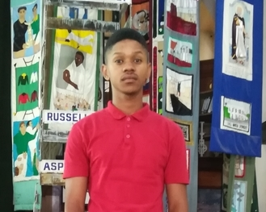
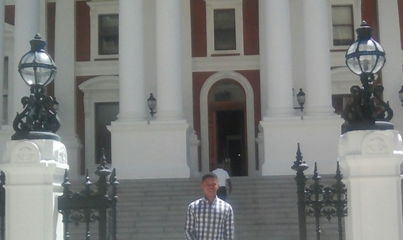
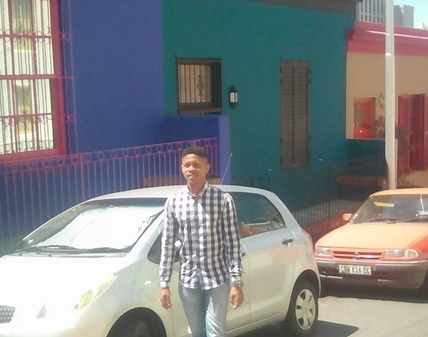

My Profile Page
Shawn Louw
Technology Enthusiast
City I'd like to visit

The city of Pisa is the one that I'd like to visit because of that beautiful leaning Tower, and to experience the view when you're inside the Tower and how it feels to climb up to the top floor.
I'd like to learn Spanish
Because Spanish only falls in second place behind Chinese, which is spoken bt over a billion people and far outranks any other language.Spanish surpasses English in its number of speakers, as English comes in third place with 335 million native speakers around the world..Phrases
| English Phrase | Spanish Phrase |
|---|---|
| I want more food | Quiero mas comida |
| Coding is fun | Qla codificación es divertida |
| I'm intersted in artificial intelligence | Qla codificación es divertida |
Historical Places
District Six
1.The District Six area is situated in the city bowl of Cape Town. It is made up of Walmer Estate, Zonnebloem, and Lower Vrede (the former Roeland Street Scheme).[2] Some parts of Walmer Estate like Rochester Street were completely destroyed, while some parts like Cauvin Road were preserved, but the houses were demolished. In other parts of Walmer Estate, like Worcester Road and Chester Road, people were evicted, but only a few houses were destroyed.[3] Most of Zonnebloem was destroyed except for a few schools, churches and mosques. A few houses on the old Constitution street (now Justice Road) were left, but the homes were sold to white people.
2..District Six also contributed mightily to the distinguished history of South African jazz. Basil Coetzee, known for his song "District Six", was born there and lived there until its destruction. Before leaving South Africa in the 1960s, pianist Abdullah Ibrahim lived nearby and was a frequent visitor to the area, as were many other cape jazz musicians..
3.In 1989 the District Six Museum Foundation was established, and in 1994 the District Six Museum came into being.
Parliament of RSA
1..The Cape Town Parliament was built in 1875–1884, the building consists of three main sections, with the original building completed in 1884, with later editions added in the 1920s, and again in the 1980s.
2.Queen Victoria granted permission for the establishment of a parliament in the Cape Colony in 1853. The first sittings were held in the Governor's residence, the Tuynhuys, after which sittings were held in the Goede Hoop Masonic Lodge. The then upper house was housed in the old supreme court building, which itself had been the slave lodge under VOC rule.
3.In the 1920s, Parliament commissioned Sir Herbert Baker to build an extension to the building, including a new chamber for the House of Assembly. The old Assembly chamber became the Parliamentary Dining Room, run by the catering department of South African Railways & Harbours.
Bo-kaap
1.The Bo-Kaap is one of Cape Town’s most distinct neighbourhoods and there’s so much to see, taste and explore.
2.The oldest building in the Bo-Kaap is in Wale Street and currently houses the Bo-Kaap Museum. This is the best place to discover the real history of the area and to get a glimpse into the life of a typical Malay family..
3.A must-do is a traditional Cape Malay meal at one of the restaurants, or a Cape Malay cooking course with one of the expert locals. Recipes date back centuries and are a spicy mix of Middle Eastern and Dutch styles of cooking, usually consisting of fruit, spices, vegetables and meat..